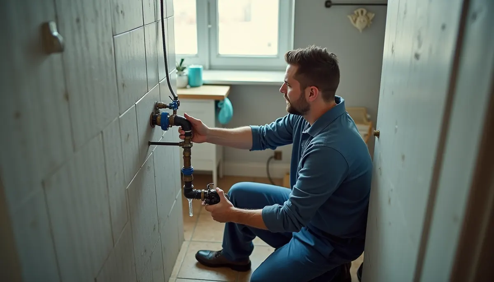
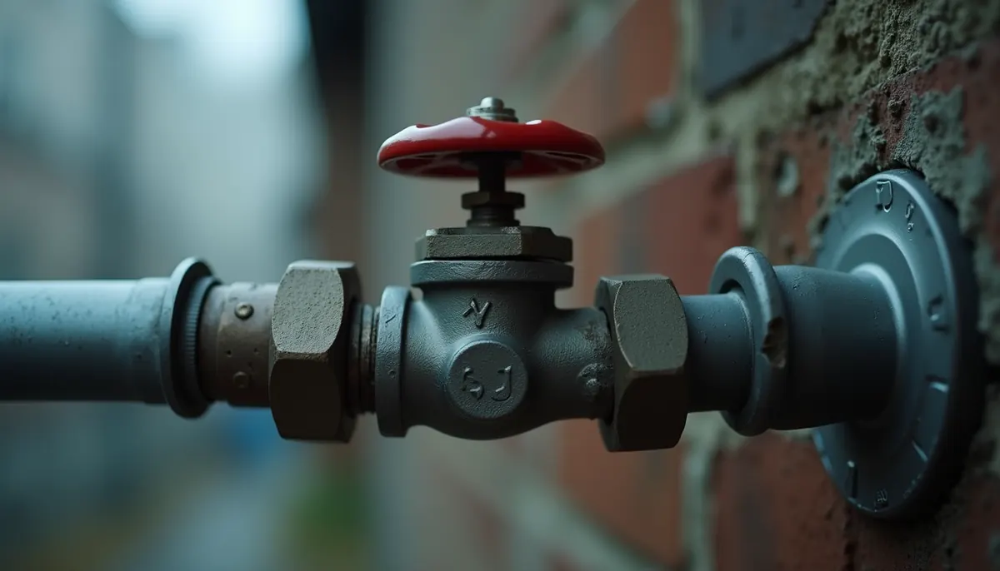
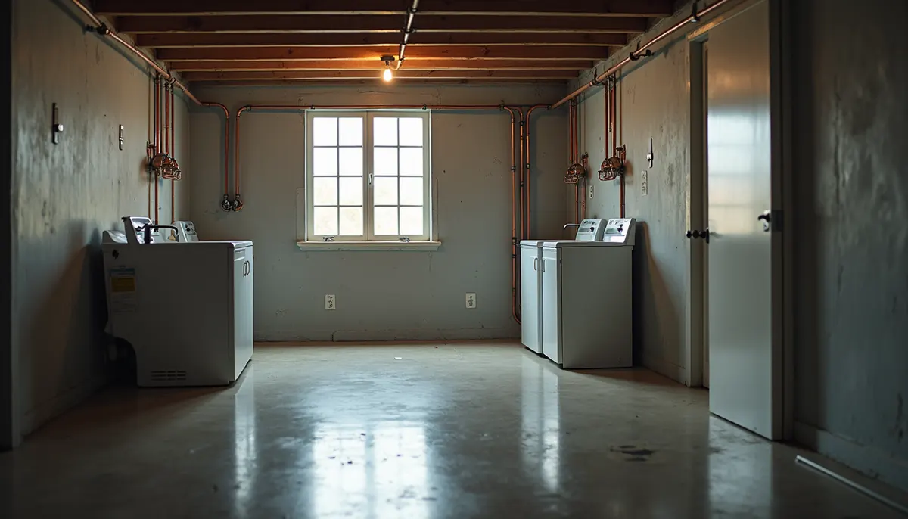

Water pipe ruptures can turn your home into a disaster zone, leading to significant damage and expensive repairs. Picture waking up to a flooded basement or a living room carpet that’s completely soaked. Not only is this frustrating, but it can also create serious issues like mold growth, which affects both your home and your health. Fortunately, by taking proactive measures, you can prevent these issues before they happen. In this blog post, we will discuss essential tips and strategies to avoid sudden water pipe ruptures and keep your home dry and safe.
Understanding the Causes of Water Pipe Ruptures
Water pipe ruptures can stem from a variety of sources, and knowing these causes is key to prevention.
One common issue is aging plumbing. National statistics show that 75% of homes built before 1970 likely have outdated copper or galvanized steel pipes that corrode and weaken over time. Additionally, frequent environmental changes, such as extreme temperature swings, can put stress on pipes, resulting in cracks.
Moreover, tree roots can infiltrate underground pipes. In fact, these roots are responsible for 37% of pipe blockages in residential areas. High water pressure can also cause severe stress; fluctuations in pressure within the pipes lead to leaks and fractures. Understanding these causes helps homeowners take the right preventative steps.
Routine Inspections: Your First Line of Defense
Regular inspections of your plumbing system are one of the best defenses against water pipe ruptures. It is a good idea to schedule professional plumbing inspections at least once a year. A licensed plumber like Angle Stop Plumbing will look for signs of wear and tear or potential problem areas. Early detection of leaks can save you from major disasters.
In addition to hiring a professional, you can conduct your own visual checks. Look for water stains on walls, dampness, or corrosion around joints and fittings in exposed areas, such as beneath sinks. A small leak can escalate into a large problem if not caught early.

Insulating Your Pipes: Protect Against Temperature Changes
In regions with cold winters, uninsulated pipes can freeze and burst. Insulating your pipes is an efficient and affordable way to prevent this. Consider using foam pipe insulation or heat tape for pipes located in unheated areas, such as basements or exterior walls.
During extreme cold snaps, allowing your faucets to drip slightly can keep water moving, which helps reduce pressure buildup. These simple actions can save you from extensive damage and costly repairs in the long run.
Maintaining Water Pressure: Avoiding Fluctuations
High water pressure can lead to significant issues in your plumbing system and contribute to pipe ruptures. If you notice water spraying from faucet fixtures, you might have a plumbing pressure issue. To check for excessive water pressure, you can easily use a pressure gauge, which is affordable and easy to find.
A normal water pressure reading should fall between 50-70 psi. If your readings exceed this, installing a pressure-reducing valve can help. Regularly check and maintain safe water pressure to extend the lifespan of your pipes and avoid costly repairs.
Know Where Your Shut-Off Valves Are Located
Knowing where your main water shut-off valve is located can save you from severe water damage in case of a leak or rupture. Many homeowners only find out where these valves are during emergencies, leading to confusion and stress.
Ensure everyone in the household is familiar with the valve's location and how to operate it. Regularly testing the shut-off mechanism ensures it functions correctly when you need it most.
No shut off valve within the home! Ask Angle Stop Plumbing and their experienced technicians to install a valve that is easily accessible. Better yet discuss a smart shut off valve that will automatically close in the event of a sudden pressure fluctuation.

Upgrading Old Pipes: A Worthwhile Investment
If you have old, corroded pipes in your home, consider upgrading to modern materials like PEX or PVC. These materials are more resistant to pressure changes and corrosion, significantly reducing the risk of ruptures.
According to industry reports, homes with modern plumbing systems can see a 50% decrease in plumbing issues compared to those with outdated systems. Upgrading your plumbing may seem costly at first, but it can ultimately save you money and trouble over time. Consult with Angle Stop Plumbing to determine the best options for your home.
Be Mindful of Landscaping and Tree Roots
While landscaping enhances your home’s appearance, certain trees and shrubs can risk your underground plumbing. If you live in an area with large trees, ensure their roots are not encroaching on your water lines.
Regular maintenance, including inspecting the areas where your plumbing is buried, can help identify potential threats before they lead to serious problems. If you suspect root invasion, reach out to an arborist or plumbing expert for advice on how to manage the situation properly.
Be Cautious with DIY Projects
Home improvement projects can be exciting, but they may lead to unintended plumbing disasters if not done correctly. Always understand your limitations with DIY tasks, especially regarding plumbing work. Improperly installed fixtures or connections can lead to ruptures and costly repairs.
If you're ever in doubt, call Angle Stop Plumbing to ensure the job is completed correctly. Spending money on expert help can save you from headaches and massive repair bills later.
Keep an Eye on Water Meter Readings
Monitoring your water usage via your water meter is an effective way to detect leaks before they turn into larger issues. If you notice for example, a sudden spike in your water bill, it could indicate a hidden leak somewhere in your home.
Regularly checking your meter can help you catch leaks early and allow for timely repairs. This habit could save you a small fortune over time by avoiding extensive water damage.
Final Thoughts
Preventing catastrophic water pipe ruptures takes diligence and proactive maintenance. By understanding the common causes of water pipe failures and applying the strategies discussed here, homeowners can significantly reduce the risk of water damage. From routine inspections and proper insulation to upgrading old pipes and closely monitoring water pressure, these actions keep your home safe and dry.
Don’t wait for disaster to strike! Take action now to protect your home and ensure it remains a safe haven for you and your loved ones.
